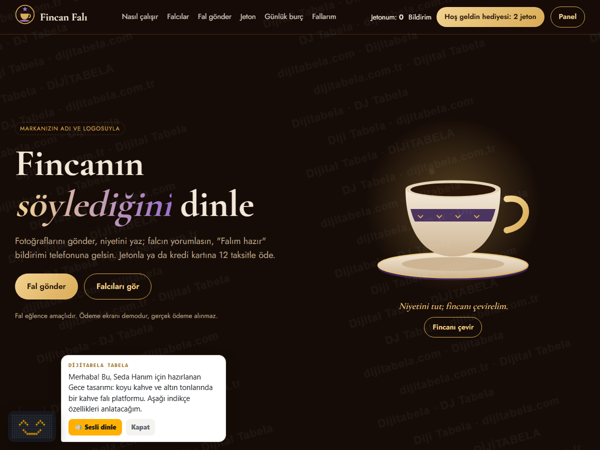
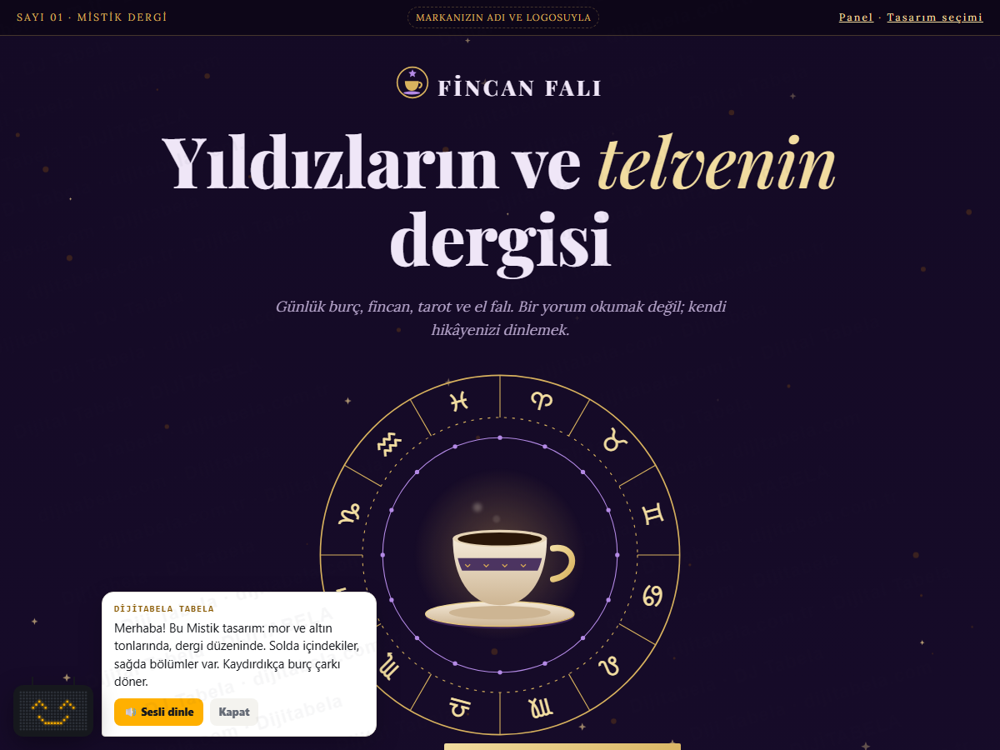
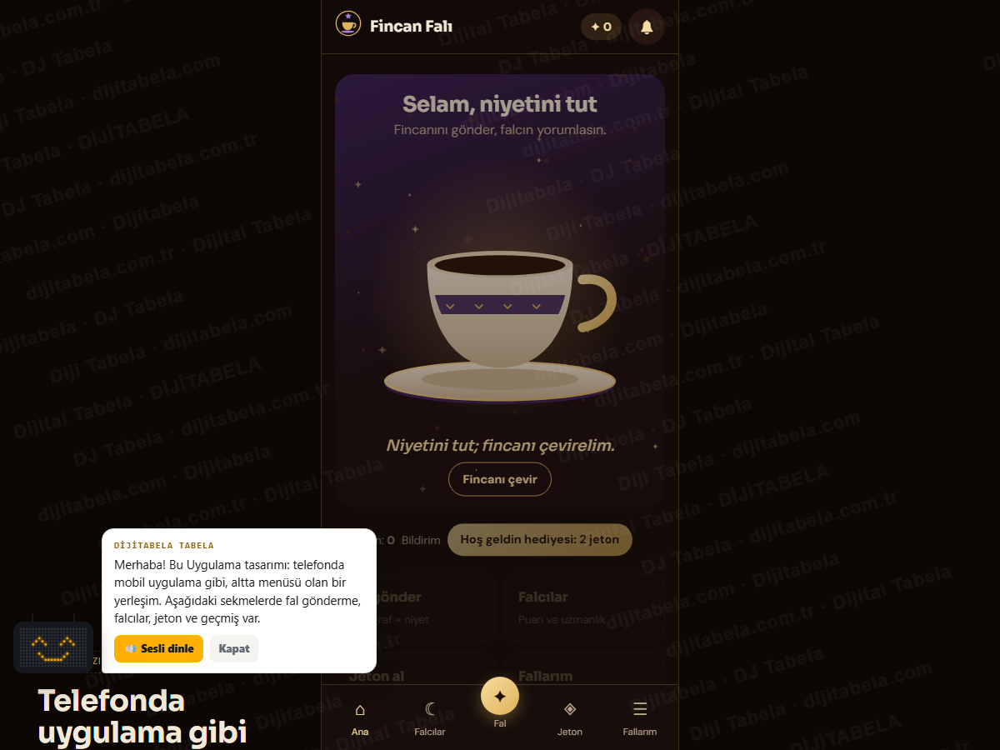

Seda Hanım için özel hazırlandı
Kendi markanızla kahve falı platformu: 3 tasarım, hepsi çalışır hâlde
Telefonda da açıp deneyin: fotoğraflı fal gönderin, falcı seçin, jeton paketi alın, kredi kartına 12 taksit ekranını görün, "Falım hazır" bildirimini bekleyin. Marka adı yer tutucu olarak "Fincan Falı"dır; adınız ve logonuzla yayına alırız.

Seçenek 1 · Gece
Koyu kahve ve altın; gizemli, vitrin gibi geniş ekran
Vitrin yerleşimi: tam ekran fotoğrafVitrin yerleşimi: tam ekran açılış, geniş bölümlerCanlı aç →
Seçenek 2 · Mistik
Mor ve altın; dönen burç çarkı, dergi gibi sayfalar
Dergi yerleşimi: çerçeveli fotoğraf, numaralı bölümlerDergi yerleşimi: içindekiler, romen rakamlı bölümlerCanlı aç →
Seçenek 3 · Uygulama
Mobil uygulama hissi; alt menü, kartlar, tek elle kullanım
Uygulama yerleşimi: kartlar, açılır paneller, alt menüUygulama yerleşimi: alt sekme menüsüCanlı aç →Falcı ve yönetici paneli (demo)
Gelen fal kuyruğu, yanıt yazma; falcı, fiyat, paket ve kampanya kodu yönetimi · giriş: demo / demo
Paneli aç →Teklif ve sorularımız
Neler hazır, taksitli ödeme altyapısı, sizden öğrenmek istediklerimiz
Teklifi aç →Üç tasarımda da çalışan özellikler:
- Fal gönderme: fincan, tabak ve telve fotoğrafı, niyet notu, doğum tarihinden otomatik burç, ilişki durumu; kahve, tarot, el ve yıldızname
- Falcı seçimi: puan, çevrimiçi rozeti, uzmanlık; çizim avatarlar
- Jeton paketleri ve tekil fal ödemesi: kart formu, tek çekim / 3 / 6 / 9 / 12 taksit (demo; gerçek ödeme alınmaz)
- "Falım hazır" bildirimi, fal sonucu, geçmiş fallar, yorum ve puan
- Falcı paneli ve yönetici paneli: kuyruk, yanıt, fiyat alanları, paketler, kampanya kodu, örnek rapor
- Günlük burç yorumu, ilk fala hediye jeton, arkadaşını davet et, KVKK onayı
- Telefonda ana ekrana eklenir (PWA); sonraki adım App Store / Google Play uygulaması